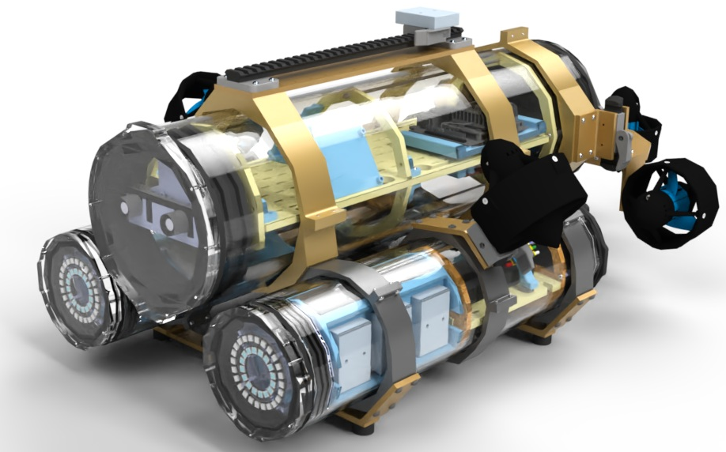
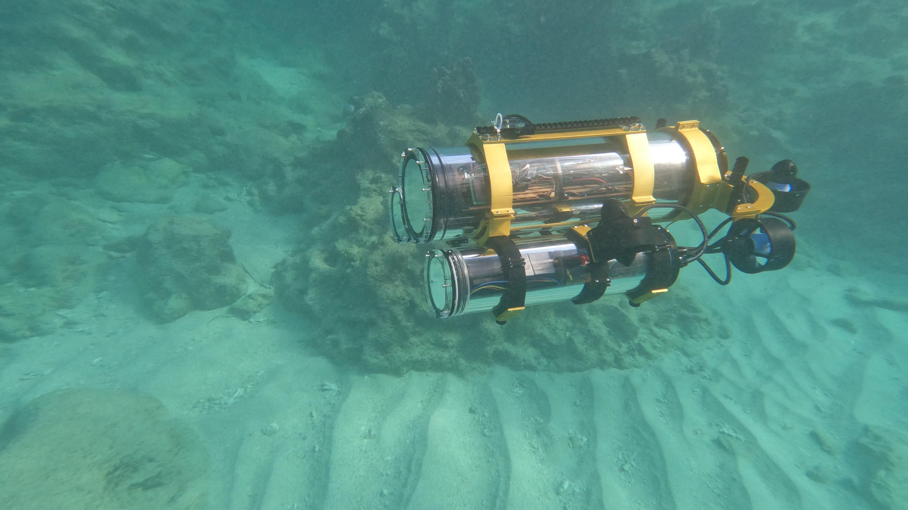
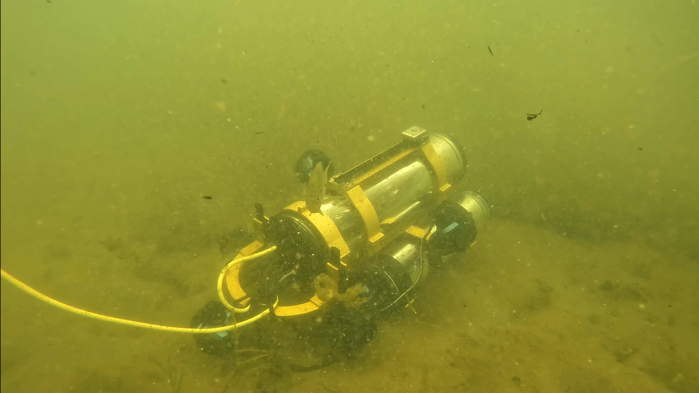
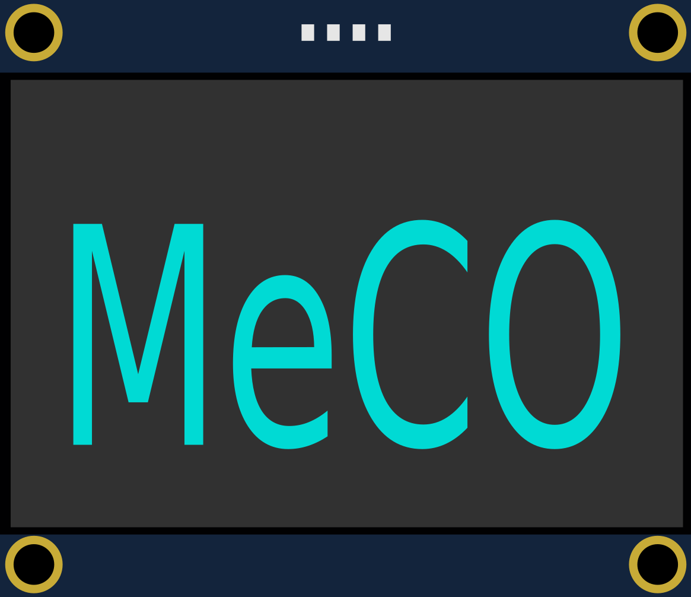

The MeCO AUV is a Medium-Cost Open-Source, versatile, and modular Autonomous Underwater Vehicle intended for use by research groups and a broad spectrum of users.
MeCO can be assembled from approximately $10,000 USD worth of off-the-shelf and custom parts, and can be operated and deployed by very small teams.
On this website, you can find recent MeCO news on the Blog, documentation on the Wiki, some cool videos of MeCO on the Videos page, and further information about the robot on the About page.
Please note that this is an open-source project. As such, we plan to release our updates and improvements to MeCO over time, we would like to see people submitting their own improvements and additions,
and we hope to be helpful to people looking for help. However, we will not provide commercial-level support for MeCO. Due to the nature of the project, we cannot guarantee help or support for anyone who
chooses to build their own MeCO, though we hope to create a mutually helpful and productive community around the robot. Thank you for your understanding.
A few selected images of MeCO can also be seen below.



